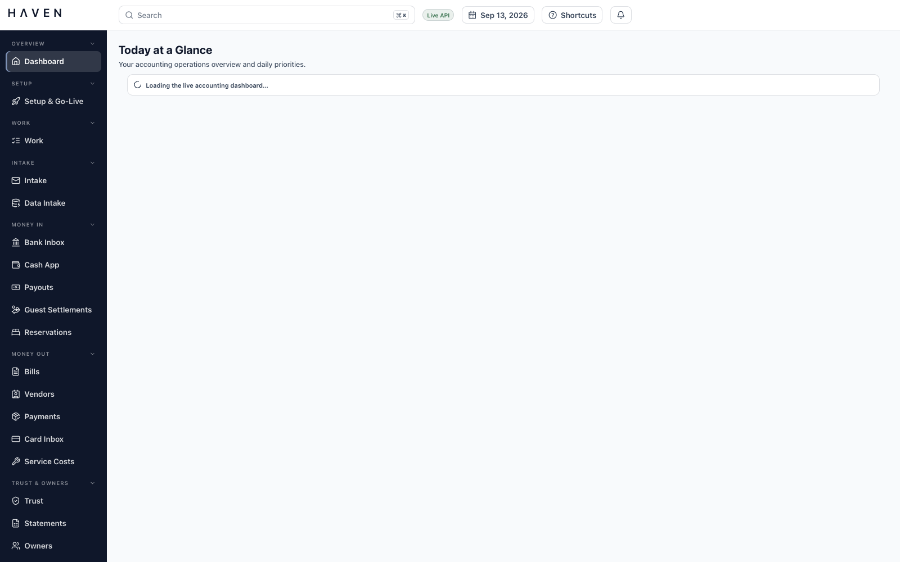
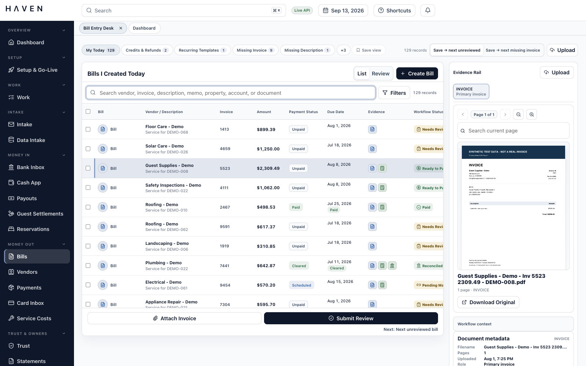
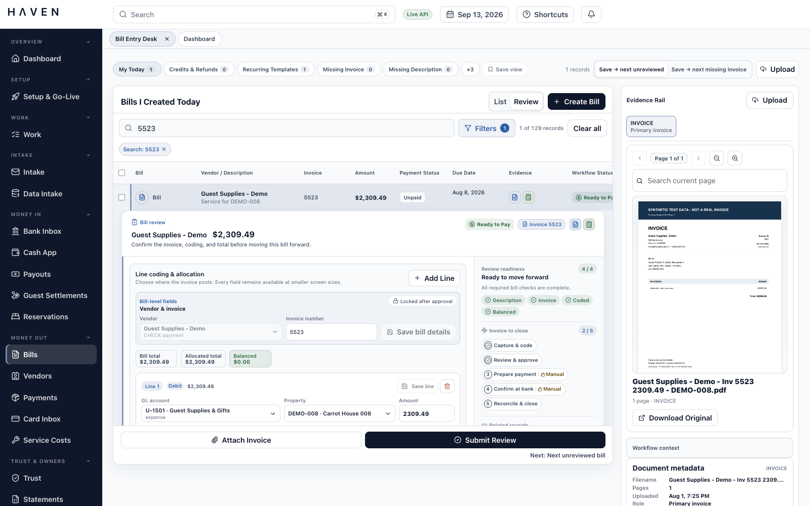
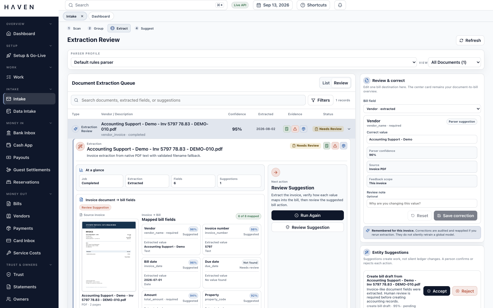
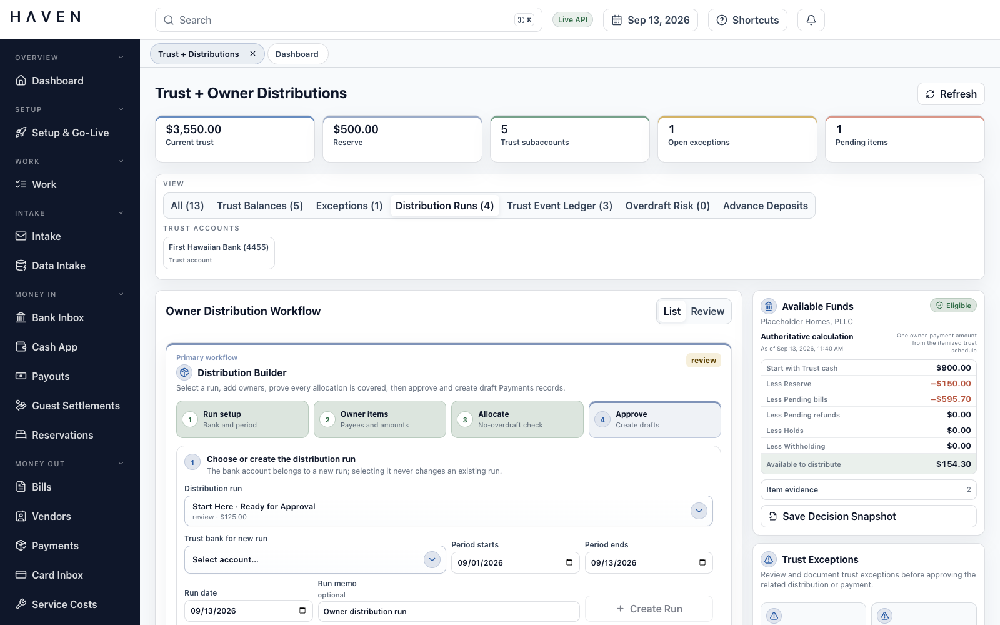
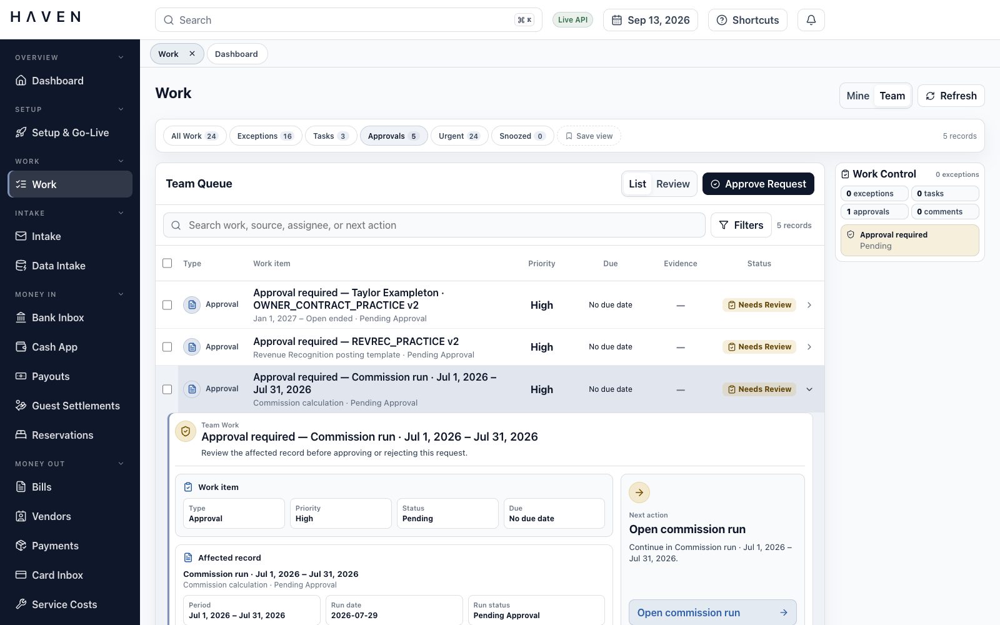

Stay in the work
Dense queues, inline review, expandable detail, and bulk actions reduce page changes and context loss.
An evidence-first finance operations workspace for property management.
HAVEN connects bills, payments, banking, trust funds, owner distributions, reservations, document evidence, and team review in one operational system, without treating financial controls as an afterthought.

Live API · Synthetic demonstration dataA command center for workload, cash movement, readiness, and exceptions, not a collection of disconnected reports.
Repository snapshot, July 2026. Counts describe implemented source, not production usage.
Property accounting rarely lives in one place. Invoices arrive as PDFs or scans. Transactions appear in banking and card portals. Reservation activity originates in property-management platforms. Approval evidence is buried in email, folders, spreadsheets, and memory.
HAVEN was designed as the working layer across those systems. The interface concentrates information where decisions happen; the backend preserves the lineage, permissions, and accounting rules behind every action.
Product questionHow can an operator understand, verify, and move a financial record forward without repeatedly leaving the task at hand?
Dense queues, inline review, expandable detail, and bulk actions reduce page changes and context loss.
Invoices, receipts, proofs, statements, and generated packets remain visible beside the accounting object they support.
Status, readiness, exceptions, and permitted actions are explicit at both the row and workflow level.
The workbench follows the real lifecycle rather than forcing each department into a separate tool.
Payment state, due date, workflow status, evidence, invoice number, amount, and vendor context are visible before a row is opened. Search and high-dimensional filters work across operational fields and lifecycle metadata.

An expanded bill exposes vendor and invoice fields, line coding, readiness checks, related records, next actions, and the original PDF together. The operator can verify the decision before moving the bill forward.


The current extractor parses text-native invoice documents with deterministic rules, returns field-level confidence, and routes incomplete results into human review. It does not silently post extracted data to the ledger.
Corrections preserve the original value, replacement, actor, reason, and source context. They are audited feedback for that document, not an unreviewed global model retraining loop.
External providers can change. Core accounting logic should not have to.
React 19 and TypeScript with Vite, TanStack Query/Table/Virtual, Zustand, Zod, Radix primitives, dnd-kit, and PDF.js.
FastAPI and SQLAlchemy expose organization-scoped workflows over PostgreSQL, with Pydantic contracts and Alembic-backed evolution.
S3-compatible object storage keeps documents separate from relational state; an outbox worker handles deferred processing without losing intent.
Each record exposes its related context, evidence, money trail, and downstream accounting impact instead of hiding them in separate modules.
Critical rules live in service and database layers, not only in client-side validation.
Entries must balance, and posted financial records become immutable. Corrections use explicit reversals rather than hidden edits.
Trust debits are blocked when they would reduce an owner or property subaccount beneath its required reserve.
Independent approval is enforced across bills, payment batches, trust distributions, owner statements, transfers, and reconciliations.
Content-addressed documents link directly to the records and accounting events they support.

Every exception, task, approval, and comment lands in one reviewable queue. Saved views, filters, priority, evidence, status, and next action make operational responsibility explicit.

Production configuration requires OIDC, MFA evidence, asymmetric access-token verification, bounded token lifetime, and exact external-identity mapping. Tenant context is applied transaction-locally and protected by PostgreSQL row-level security.
API, worker, migration, and maintenance workloads use distinct restricted principals so ordinary runtime processes do not own the schema or bypass tenant policy.
Uploads are size-bounded, signature-checked, restricted by type, protected from active content and CSV injection, and designed to pass through malware scanning. Access URLs are short-lived.
Deterministic fictional records exercise real workflow states without presenting scraped or customer data. Synthetic documents remain visibly labeled throughout the demo.
Coverage includes authentication, tenant isolation, upload security, maker-checker controls, extraction corrections, financial guardrails, and complete trust-distribution lifecycles.
HAVEN demonstrates how I approach complex product work: begin with the real operating model, design the interface and data model together, put irreversible rules at the lowest reliable layer, and make every abstraction earn its place in the user’s day.
It is an engineering prototype and architecture package, not a claim of banking certification or jurisdiction-specific legal readiness. A production deployment would still require provider certification, independent security review, jurisdictional trust-accounting review, and hardened live integrations.